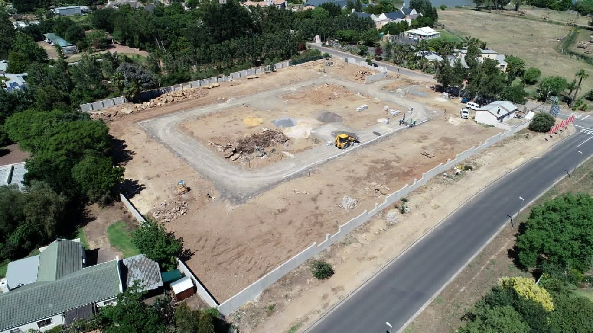

Projects / Civil works & groundwork
Civil works & groundwork.
Ground preparation, excavation and site operations viewed from the ground and from above.
All projects ↗
From the site
The work beneath the build.
A closer look at earthworks, heavy machinery and the preparation that shapes a construction site.
Planning something similar?
Tell us your location, stage and the type of work you need.
Discuss your project ↗